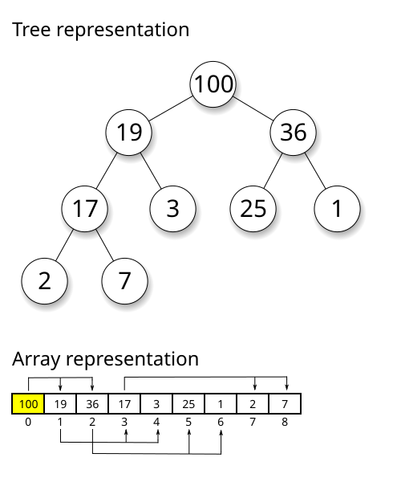

<!DOCTYPE html>
<html lang="en">
<head>
  <meta charset="UTF-8" />
  <meta name="viewport" content="width=device-width, initial-scale=1.0"/>
  <title>Salesforce | Lead Scoring Case</title>
  <link rel="stylesheet" href="https://cdnjs.cloudflare.com/ajax/libs/font-awesome/6.5.0/css/all.min.css">
<link rel="stylesheet" href="style1.css" />
</head>
<body>
  <div class="layout">
    <aside class="sidebar">
      <h2><i class="fas fa-cloud"></i> Salesforce Use Cases</h2>
      <ul>
        <li><a href="#intro">Introduction</a></li>
        <li><a href="#performance">Performance </a></li>
        <li><a href="#code">Code</a></li>
        <li><a href="#complexity">Time and Space Complexity</a></li>
        <li><a href="#ref">References</a></li>
      </ul>
    </aside>

    <main class="main">
      <h1 class="header">Automated Lead Scoring System</h1>
      <p class="subtitle">Prioritize leads efficiently using AI-based dynamic scoring.</p>

      <div class="card" id="intro">
        <h3>Business Case</h3>
      <p>Utilizes efficient data structures to synchronize customer interactions and transactional records across systems in near real-time. Hash Maps and Queues provide fast access and order-preserving mechanisms to manage high-throughput CRM operations.</p>
      </div>
      <div class="card" id="performance">
      <h3>Algorithm, Design Techniques, Performance Analysis:</h3>
         
         <ul>
        <li><strong>Data Structure used:</strong> Max-Heap (priority_queue in C++) maintains the highest scoring leads at the top.</li>
        <li><strong>Design Approach:</strong> Uses greedy selection to prioritize highest scores; insertion maintains heap invariant in O(log n) time.</li>
       </ul>
      </div>

      <div class="card" id ="code"> 
        <h3>Code</h3>
        <div class="code-block">
<pre>
#include <iostream>
#include <vector>
using namespace std;

struct Node {
    int sum;
    Node* left;
    Node* right;

    Node(int val = 0) : sum(val), left(nullptr), right(nullptr) {}
    Node(Node* l, Node* r) : left(l), right(r), sum(0) {
        if (l) sum += l->sum;
        if (r) sum += r->sum;
    }
};

class PersistentSegmentTree {
    int n;
    vector<Node*> versions;

public:
    PersistentSegmentTree(const vector<int>& data) {
        n = data.size();
        Node* root = build(data, 0, n - 1);
        versions.push_back(root);
    }

    // Build the initial tree
    Node* build(const vector<int>& data, int l, int r) {
        if (l == r)
            return new Node(data[l]);

        int m = (l + r) / 2;
        return new Node(build(data, l, m), build(data, m + 1, r));
    }

    // Update: returns root of new version
    Node* update(Node* node, int l, int r, int idx, int val) {
        if (l == r)
            return new Node(val);

        int m = (l + r) / 2;
        if (idx <= m)
            return new Node(update(node->left, l, m, idx, val), node->right);
        else
            return new Node(node->left, update(node->right, m + 1, r, idx, val));
    }

    // Public update method
    void createNewVersion(int idx, int val) {
        Node* newRoot = update(versions.back(), 0, n - 1, idx, val);
        versions.push_back(newRoot);
    }

    // Query sum in range [l, r] for a given version
    int query(Node* node, int l, int r, int ql, int qr) {
        if (!node || r < ql || l > qr) return 0;
        if (ql <= l && r <= qr) return node->sum;

        int m = (l + r) / 2;
        return query(node->left, l, m, ql, qr) +
               query(node->right, m + 1, r, ql, qr);
    }

    // Public query method
    int queryVersion(int version, int ql, int qr) {
        if (version >= versions.size()) {
            cout << "Invalid version\n";
            return -1;
        }
        return query(versions[version], 0, n - 1, ql, qr);
    }
};
int main() {
    vector<int> sales = {10, 20, 30, 40, 50}; // Initial sales data
    PersistentSegmentTree pst(sales);

    pst.createNewVersion(2, 100); // Version 1: update index 2 → 100
    pst.createNewVersion(0, 200); // Version 2: update index 0 → 200

    cout << "Sum in version 0 [0, 4]: " << pst.queryVersion(0, 0, 4) << endl; // 150
    cout << "Sum in version 1 [0, 4]: " << pst.queryVersion(1, 0, 4) << endl; // 220
    cout << "Sum in version 2 [0, 2]: " << pst.queryVersion(2, 0, 2) << endl; // 200 + 20 + 100 = 320

    return 0;
}
</pre>
        </div>
      </div>

      <div class="card" id ="complexity">
        <h3>⏱️ Time and Space Complexity</h3>
        <table border="1">
  <thead>
    <tr>
      <th>Operation</th>
      <th>Time Complexity</th>
      <th>Space Complexity</th>
    </tr>
  </thead>
  <tbody>
    <tr>
      <td>Insertion</td>
      <td>O(log n)</td>
      <td rowspan="4">O(n) for n leads</td>
    </tr>
    <tr>
      <td>Get Top k Leads</td>
      <td>O(k log n)</td>
    </tr>
    <tr>
      <td>Traversal</td>
      <td>O(1)</td>
    </tr>
    <tr>
      <td>Access</td>
      <td>O(log n)</td>
    </tr>
  </tbody>
</table>

      </div>

      <div class="card references" id="ref">
        <h3> References</h3>
        <ul>
          <li>https://www.salesforce.com/blog/lead-scoring/</li>
        </ul>
      </div>

      <div class="nav-footer">
        <a href="#">Next: Sales Forcasting and Trend Analysis →</a>
      </div>
    </main>
  </div>
</body>
</html>
